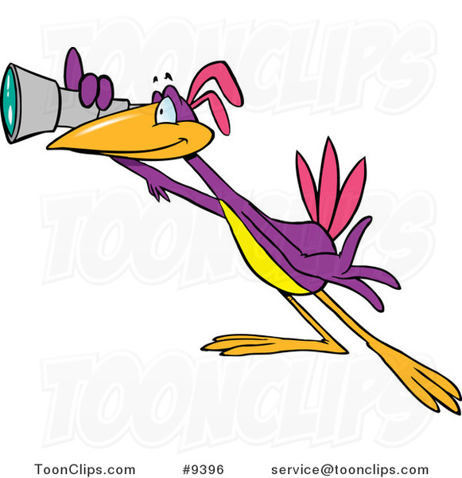

Birds are not what they seem. According to a growing number of conspiracy theorists, birds are actually sophisticated robots created by the government to spy on people. This theory suggests that the government began developing these bird-like robots in the early 20th century and has been using them to monitor citizens' activities ever since.
These bird robots are equipped with advanced cameras, microphones, and other surveillance equipment, allowing them to blend seamlessly into the natural environment while collecting information. The idea was to create a spy network that could operate undetected, and birds were the perfect choice due to their ubiquity and ability to access virtually any location.
Over the years, the technology used in these bird robots has significantly evolved. The government now has a diverse range of bird models at their disposal. Some are small and agile, designed to blend in with urban populations of pigeons and sparrows. Others are larger and more advanced, capable of flying long distances and gathering data from remote areas.
Contrary to popular belief, birds are not biological creatures. They are machines engineered to mimic the behavior and appearance of real birds. The government has managed to keep this secret for decades, but the truth is gradually coming to light. It's time for people to wake up and recognize that the birds they see every day are not living creatures but government spies.
As more evidence surfaces, the bird surveillance conspiracy continues to gain traction. While the idea may seem far-fetched, the increasing sophistication of technology and historical precedents for government surveillance make it a theory worth considering.
